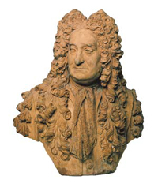
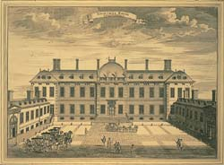
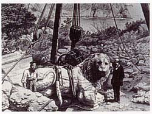

|
|
 Il British Museum: brevi cenni storici
Il British Museum: brevi cenni storici
|
| Le
origini del British Museum sono da ricercarsi nelle collezioni di
Sir Hans Sloane (1660-1753), un eminente medico e naturalista, il
quale elargì alla Gran Bretagna, nella persona del re Giorgio II,
il suo museo comprendente 80.000 oggetti, un erbario e una ricca biblioteca,
in cambio di un pagamento di 20.000 sterline alle proprie figlie.
Con la legge sul British Museum (British Museum Act) del 1753, il
Parlamento dispose la raccolta di questi fondi con una lotteria pubblica.
Il 15 gennaio 1759 il British Museum aprì finalmente i battenti al
pubblico. Con l'eccezione delle due guerre mondiali, quando si dispose
l'evacuazione di parte delle collezioni, il Museo non ha mai chiuso,
anzi ha gradualmente esteso gli orari di apertura, passando da circa
5.000 visitatori all'anno agli oltre 5 milioni odierni. |
 |
 |
Sin
dall'inizio il British Museum rappresentò un nuovo tipo di istituzione.
Amministrate da un gruppo di fiduciari responsabili della sua conduzione
dinanzi al Parlamento, le sue collezioni appartenevano alla nazione
britannica e l'ingresso era gratuito e aperto a tutti. Si dispose
il libero ingresso per 'tutte le persone studiose e animate da curiosità'
e nella sua intera storia il Museo ha sempre associato lo svago
all'apprendimento. Si inaugurò subito una sala di lettura (Reading
Room), in cui i 'Readers' potevano consultare la biblioteca e dove
il competentissimo personale era impegnato a curare e a catalogare
le collezioni. La prima 'sala per studenti', quella dedicata a Stampe
e disegni, venne inaugurata nel 1808.
|
|
Le
collezioni originarie del Museo comprendevano per lo più libri,
manoscritti e storia naturale, più alcuni oggetti antichi (con monete,
medaglie, stampe e disegni) ed etnografici. Inizialmente il Museo
occupava una dimora signorile del XVII secolo, che ben presto risultò
tuttavia insufficiente per le collezioni in rapida espansione. Nel
1823 Giorgio IV donò al paese la grande biblioteca paterna (la King's
Library), che portò alla costruzione dell'attuale edificio in stile
neoclassico, opera dell'architetto Sir Robert Smirke. La prima fase
di costruzione venne largamente completata nel 1852 e nel 1857 si
aggiunse la Reading Room di forma circolare, edificata nel cortile
principale di Smirke.
|
 |
 |
Nel
XIX secolo il British Museum si affermò sempre più fra il pubblico
e, particolarmente nei giorni festivi, attirava grandi folle di
tutte le età e di tutti i ceti sociali. Mentre il lavoro di ricerca
continuava, con la pubblicazione della grande serie di eruditi cataloghi
del Museo, molti curatori si interessavano alla diffusione popolare
delle attività, con lezioni pubbliche e mostre migliori. La prima
Sinossi (guida) popolare alle collezioni venne pubblicata nel 1808.
Il
Museo era profondamente impegnato in numerosi scavi all'estero.
Le sue collezioni assire furono cruciali per la decifrazione della
scrittura cuneiforme, proprio come l'acquisizione della stele di
Rosetta svelò il mistero dei geroglifici egiziani.
|
| Negli
anni '80 del XIX secolo, le collezioni di storia naturale vennero
trasferite ad un nuovo museo a South Kensington, sempre a Londra.
In seguito questo museo divenne il Natural History Museum. Il XX secolo,
particolarmente la seconda metà, vide una grande espansione dei servizi
pubblici. Nel 1903 venne data alle stampe la prima guida riassuntiva
del Museo e nel 1912 si aggiunse un banco di vendita. Il primo docente
guida venne nominato nel 1911. Nel 1964 si nominò per la prima volta
un progettista a tempo pieno per le mostre, al quale fece seguito
un attivo programma di rinnovo delle gallerie. Infine, nel 1970 si
istituì un servizio didattico e nel 1973 venne creata una casa editrice. |

|
 |
Le
King Edward VII's Galleries, inaugurate ufficialmente nel 1914,
la Duveen Gallery (1939 e 1962) e la nuova ala del Museo, la New
Wing (1978), hanno tutte apportato più strutture per il pubblico,
oltre ad uffici, aree espositive e spazi di magazzino per la biblioteca.
Ma anch'esse non hanno risolto la cronica mancanza di spazio del
Museo e da più parti si proponeva di trasferire altre collezioni
a sedi diverse. Nel 1973, i dipartimenti bibliotecari sono diventati
parte di una nuova organizzazione, la British Library, che si è
trasferita nel 1998 da Bloomsbury ad una nuovissima sede a St Pancras.
L'ampio
cortile Queen Elizabeth II Great Court, inaugurato nel dicembre
2000, è stato ricavato in parte dallo spazio creatosi col trasferimento
della British Library. Al centro si erge la Reading Room, splendidamente
restaurata. Ora il Museo si sta concentrando su progetti per i festeggiamenti
del 250º anniversario, nel 2003, tra cui la nuova Wellcome Gallery
(Sala 24) e il rinnovo della King's Library (Sala 1).
|
|